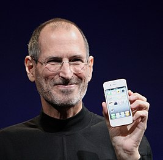

Стив Джобс
Steve Jobs  Джобс демонстрирует смартфон iPhone 4 на Worldwide Developers Conference в 2010 году| Имя при рождении | Стивен Пол Джобс (Steven Paul Jobs) |
| Дата рождения | 24 февраля 1955 |
| Место рождения | Сан-Франциско, Калифорния, США |
| Дата смерти | 5 октября 2011 |
| Место смерти | Пало-Алто, США |
| Гражданство |  США США |
| Род деятельности | предприниматель, со-основатель и CEO компаний Apple, NeXT и Pixar |
| Отец | биологический: Абдулфатта «Джон» Джандали (род. 1931) приёмный: Пол Рейнголд Джобс (1922—1993) |
| Мать | биологическая: Джоан Кэрол Шибле (род. 1932) приёмная: Клара Джобс (Агопян) (1924—1986) |
| Супруга | Лорен Пауэлл (1991—2011) |
| Дети | от Крис Энн Бреннан: Лиза Бреннан-Джобс (род. 1978), от Лорен Пауэлл: Рид Джобс (род. 1991), Эрин Джобс (род. 1995), Ив Джобс (род. 1998) |
Детство
Стивен Пол Джобс родился 24 февраля 1955 года. Его родителями были незарегистрированные в браке студенты: уроженец Сирии Абдулфаттах (Джон) Джандали и Джоан Шибле из католической семьи немецких эмигрантов. Джоан училась в магистратуре Висконсинского университета, а Джандали там же работал ассистентом преподавателя. Поскольку родственники Джоан возражали против их отношений, а находившийся при смерти отец и вовсе пригрозил лишить её наследства, ей пришлось уехать рожать к частному врачу в Сан-Франциско и затем отдать ребёнка на усыновление.
Джобс в детстве
Мальчик был усыновлён Полом Джобсом и американкой армянского происхождения Кларой Джобс, урождённой Агопян (Clara Hagopian). Своих детей Джобсы иметь не могли. Они и назвали приёмного сына Стивеном Полом. Джоан хотела, чтобы приёмные родители Стивена имели высшее образование, и, узнав, что Клара не окончила колледж, а Пол учился только в средней школе, подписала бумаги об усыновлении только после того, как они дали письменное обязательство оплатить обучение Стивена в колледже. Джобс всегда считал Пола и Клару отцом и матерью, он очень раздражался, если кто-то называл их приёмными родителями: «Они — мои настоящие родители на 100 %». Согласно правилам официального усыновления, биологические родители ничего не знали о местонахождении сына, и Стив встретился с родной матерью и младшей сестрой только через 31 год.
Когда Стиву исполнилось два года, Джобсы удочерили девочку Пэтти, а ещё через три года семья переехала из Сан-Франциско в Маунтин-Вью. Пол был автомехаником и работал в финансовой компании CIT[en]. В семейном гараже он ремонтировал старые машины на продажу, чтобы заработать на образование Стива и выполнить обязательства перед его биологическими родителями. Пол также старался привить сыну любовь к профессии автомеханика. Это занятие не пришлось Стиву по душе, но через автомобили отец познакомил его с азами электроники. Вместе они разбирали и собирали радиоприёмники и телевизоры, в результате Стив заинтересовался и увлёкся подобной техникой. Клара Джобс работала бухгалтером в Varian Associates — одной из первых хай-тек-компаний, позже вошедших в состав Кремниевой долины. Она научила Стива читать, прежде чем он пошёл в школу.
Мы долго сидели с ним на тротуаре перед домом Билла и делились историями — мы рассказывали друг другу про свои розыгрыши и про разработанные нами устройства. Я чувствовал, что у нас много общего. Мне обычно тяжело объяснять людям все тонкости электротехнических устройств, которые я собирал, но Стив хватал всё на лету. Мне он сразу понравился
— Стив Возняк
Школа
Школьные занятия разочаровали Стива своим формализмом. Преподаватели начальной школы Мона-Лома характеризовали его как проказника, и только одна учительница, миссис Хилл, смогла увидеть в своём ученике незаурядные способности и найти к нему подход. Когда Стив обучался в четвёртом классе, миссис Хилл давала ему за хорошую учёбу «взятки», в виде сладостей, денег и наборов «сделай сам», тем самым стимулируя его обучение. Это быстро принесло плоды: вскоре Стив начал прилежно учиться без всякого подкрепления, а в конце учебного года настолько блистательно сдал экзамены, что директор предложил перевести его из четвёртого класса сразу в седьмой. В результате по решению родителей Стив был зачислен в шестой класс, то есть в среднюю школу. Это была школа в Криттенден, в нескольких кварталах от Мона-Лома, но совсем в другом, криминальном районе. И на улице, и в самой школе хулиганы не давали Джобсу прохода. Через год Стив поставил перед родителями ультиматум о переводе в другую школу. Семье пришлось на последние сбережения купить дом в более приличном районе, в южном Лос-Альтосе[20].
Дом Пола и Клары Джобс на Крист-драйв в Лос-Альтосе. Здесь Стив Джобс, Стив Возняк и Рональд Уэйн в 1976 году основали Apple Computer
В дальнейшем Джобс учился в средней школе и в старшей школе Хоумстед в Купертино. После переезда семьи отец устроился на работу механиком в соседний городок Санта-Клара в самом центре будущей Кремниевой долины, в компанию Spectra-Physics, производившую лазеры.
Стив общался с инженером Ларри Лэнгом, жившим по соседству со старым домом Джобсов. Лэнг привёл Стива в научно-исследовательский клуб компании Hewlett-Packard. «На занятие приглашали инженера из какой-нибудь лаборатории, он приходил и рассказывал, над чем сейчас работает» — вспоминал позже Джобс. Здесь же Стив впервые увидел персональный компьютер (программируемый калькулятор) 9100A[en], который произвёл на него огромное впечатление. Участники кружка работали над собственными научными проектами, и Стив решил собрать цифровой частотомер. Когда для реализации замысла ему понадобились детали, производимые Hewlett-Packard, тринадцатилетний Джобс, недолго думая, позвонил домой главе компании, Биллу Хьюлетту. В результате он получил не только нужные детали, но и работу на конвейере в HP по окончании первого года обучения в Хоумстеде, благодаря личному приглашению Хьюллета. Кроме этой работы, возбуждавшей зависть сверстников, Стив разносил газеты, а в следующем году служил на складе в магазине электроники Haltek[23]. К пятнадцати годам у Джобса уже был первый собственный автомобиль — двухцветный Nash Metropolitan[en], купленный при финансовом участии отца. Пол Джобс также установил на машину двигатель от MG. Через год Стив, прикопив ещё денег, смог обменять этот автомобиль на красный Fiat 850 Coupé. Тогда же Стив Джобс начал общаться с хиппи, слушать Боба Дилана и The Beatles, курить марихуану и употреблять ЛСД, из-за чего некоторое время конфликтовал с отцом.
Джобс подружился со своим одноклассником Биллом Фернандесом[en], который тоже интересовался электроникой. Фернандес познакомил Джобса с увлекавшимся компьютерами выпускником, настоящей «легендой» школы, Стивеном Возняком (также известным как «Воз»), старшим его на пять лет. В 1969 году Воз с Фернандесом начали собирать небольшой компьютер, который они прозвали «крем-содовым» и показали Джобсу. Так Стив Джобс и Стив Возняк стали лучшими друзьями:
Рид-колледж
Кампус Рид-колледжа
Летом 1972 года после окончания школы Стив Джобс ушёл из родительского дома и вместе со своей подружкой Крис Энн Бреннан поселился в хижине, в горах над Лос-Альтесом, несмотря на возражения родителей[37]. В том же году он поступил в Рид-колледж в Портленде (штат Орегон). Это был частный гуманитарный университет, один из самых дорогих в Америке, и родителям, много лет откладывавшим каждый цент на образование сына, было тяжело оплачивать его обучение. Но Стив не хотел учиться нигде больше, и большая часть родительских сбережений была потрачена на его обучение в Риде[26][38]. Рид славился вольными нравами и хипповской атмосферой, притом что стандарты обучения были очень высокими, а учебная программа насыщенной. В Риде Джобс впервые всерьёз заинтересовался восточными духовными практиками, особенно дзен-буддизмом. Тогда же он стал убеждённым вегетарианцем и начал эксперименты с голоданием.
В Рид-колледже Джобс познакомился с Дэниелом Коттке, ставшим наравне с Возняком его лучшим другом, а также с прирождённым лидером Робертом Фридландом[en], президентом студенческого совета, управляющим яблоневой фермой и последователем восточной философии, оказавшим большое влияние на Джобса:
Роберт был коммуникабельным, харизматичным парнем, настоящим продавцом. А Стив, когда я познакомился с ним, был застенчив, скрытен, держался в тени. Я думаю, это Роберт научил его тому, как продавать, как выйти из своей скорлупы, раскрыться и овладеть ситуацией
— Даниэль Коттке
Фридланд, заинтересовавшись индуизмом, сошёлся с местными кришнаитами и увлёк за собой Джобса с Коттке. Летом 1973 года Фридланд предпринял поездку в Индию, к гуру Рам Дасса, Ним Кароли Бабе, также известному как Махарадж-джи, в поисках просветления. Вернувшись обратно, Фридланд взял себе духовное имя, облачился в индийские одежды, сандалии и в таком виде расхаживал по кампусу. Джобс во что бы то ни стало захотел повторить путь Фридланда и «найти себя».
После шести месяцев обучения Джобс бросил колледж. Поскольку нудная обязательная программа его не интересовала, он не видел смысла в её изучении. Его отчислили, но ещё целый год с разрешения деканата Джобс бесплатно посещал творческие занятия, которые ему были по-настоящему интересны, в том числе курсы каллиграфии. Позже Джобс говорил:
Если бы в колледже я не увлекся каллиграфией, у Mac не было бы множества шрифтов, пропорционального кернинга и интерлиньяжа. А поскольку Windows скопирован с Mac, то ни у одного персонального компьютера всего этого не было бы вообще
— Стив Джобс
Находясь в колледже «на птичьих правах», Джобс продолжал вести богемный образ жизни, хотя спать ему приходилось у друзей на полу в общежитии, а чтобы прокормиться, он собирал бутылки из-под колы и по воскресеньям ходил в храм кришнаитов за бесплатными обедами
Работа в Atari
В феврале 1974 года Джобс устроился техником в молодую компанию Atari в Лос-Гатосе (Калифорния). Компания занималась производством видеоигр и уже имела в своём активе один абсолютный хит — аркадный симулятор Pong для двоих игроков. Джобс, получая 5 долларов в час, стал одним из первых пятидесяти её сотрудников. В Atari Джобс занимался в основном доводкой игр «до ума», выдвигая интересные и оригинальные предложения по дизайну. Однако там его сразу невзлюбили за высокомерие и неопрятный внешний вид. Но основателю и главе Atari Нолану Бушнеллу Стив понравился, и он перевёл Джобса на работу в ночную смену, сохранив перспективного сотрудника
Он был философом в отличие от многих, с кем мне приходилось работать. Мы частенько рассуждали о свободе воли и предопределении. Я утверждал, что все предопределено, что мы все запрограммированы. И если иметь достоверные исходные данные, то можно предсказывать действия других людей. Стив считал иначе[
— Нолан БушнеллВ середине 1974 года[51] Джобс отправился в Индию в поисках духовного просветления. Причём Джобсу удалось убедить руководство Atari оплатить ему дорогу до Мюнхена, где он выполнил поручение, связанное с бизнесом компании. В Индии Джобс, по совету Фридланда, собирался посетить гуру Нима Кароли Бабу, но оказалось, что тот умер в сентябре 1973 года. К тому же по дороге Джобс переболел дизентерией и похудел на 15 килограммов. Пришлось задержаться в деревне для восстановления сил. Вскоре к Джобсу присоединился Коттке. Вдвоём они совершили долгий путь до ашрама Хариахан Бабы (англ.)русск.. Они потратили много времени на автобусные поездки из Дели в штат Уттар-Прадеш и обратно, а затем в Химачал-Прадеш и обратно. Джобс не стал искать другого гуру, а попытался достичь просветления самостоятельно, с помощью аскезы, голодания и простоты. По воспоминаниям Коттке, «внутренней тишины» в Индии Джобсу достичь не удалось, а близким друзьям Стив признавался, что затеял эту поездку и вообще погрузился в испытания различных духовных и мистических практик, чтобы заглушить боль от осознания того, что его бросили сразу после рождения. Узнав своих настоящих родителей, Стив надеялся понять что-то очень важное про себя и своё место в жизни[53]. После семимесячного пребывания в Индии Джобс вернулся в США[54] исхудавшим, красно-коричневым от загара, с выбритой головой и в традиционной индийской одежде.
После возвращения Джобс всё-таки смог найти себе духовного наставника — прямо в Лос-Альтосе. Им стал Кобун Тино Отагава, ученик основателя центра дзэн-буддизма в Сан-Франциско Сюнрю Судзуки, автора книги «Сознание дзэн, сознание начинающего». Отагава по средам читал в Лос-Альтосе вечерние лекции и проводил медитации с учениками. Джобс стал серьёзным практиком дзэн-буддизма, участвовал в длительных медитациях в центре дзэн «Тассахара» и даже подумывал о том, чтобы податься в ученики при храме Эйхэйдзи в Японии, но наставник уговорил его остаться в Америке.
В это время Джобс экспериментировал с психоделиками. Позже он называл свой опыт употребления ЛСД «одной из двух или трёх самых важных вещей, совершённых им в жизни» и прибавлял, что люди, не пробовавшие «кислоту», никогда не смогут понять его до конца.
В начале 1975 года Джобс вернулся в Atari. Тогда шла доработка игры Breakout и была объявлена премия за оптимизацию схемы игры в размере 100 долларов за каждый исключенный из схемы чип. Джобс вызвался взяться за эту работу, но, так как плохо разбирался в разработке электронных схем, вынужден был обратиться к Возняку, работавшему тогда в Hewlett-Packard. Дополнительная сложность заключалась в сроках — Джобс заявил, что работу нужно было выполнить за 4 дня. На разработку такой схемы обычно требуется несколько месяцев, но Джобс смог убедить Возняка, что тот справится за 4 дня.
Возняк практически не спал четверо суток, днём работая на основной работе, но выполнил задание, разработав за отведённое время схему игры. При этом, к большому удивлению инженеров Atari, он использовал всего 45 чипов[63][64] (подобные схемы тогда содержали 130—170 чипов, а наиболее удачно разработанные — 70—100 чипов). За эту работу Джобс передал Возняку чек на 350 долларов. Однако позднее выяснилось, что Джобс обманул своего партнёра, сообщив, что в Atari ему заплатили только 700 долларов. Джобс умолчал об объявленной премии в 100 долларов за каждый сэкономленный чип, и которая составила 5000 долларов. Получалось, что эту премию Джобс полностью присвоил себе. Кроме того, четырёхдневный срок Джобс тоже выдумал, потому что хотел успеть на ферму Фридланда к сбору урожая яблок и торопился на самолёт. Получив деньги, он бросил работу в Atari. Позже, узнав о реальном бонусе, Возняк огорчился и заметил, что если бы Джобс тогда признался ему, что нуждается в деньгах, он бы сам отдал ему свою долю[31]. Что касается Джобса, то он продолжал утверждать, что отдал Возу половину полученных денег, и после того, как десять лет спустя эта история просочилась в печать
Apple Computer
Чтобы собрать нужную сумму, Джобсу пришлось продать свой «хипповый» микроавтобус Volkswagen T1 и пересесть на велосипед, а Возняк сбыл с рук одну из главных своих ценностей — программируемый калькулятор HP-65. Из вырученных средств Джобс заплатил около 600 долл. знакомому сотруднику Atari за создание принципиальной схемы печатной платы[прояснить], которую потом можно было бы отдать в серийное производство. В январе 1976 года первая партия плат поступила в распоряжение компаньонов.
Логотип Apple, придуманный Уэйном: Ньютон под яблоней
Джобсу нужен был третий голос на случай разногласий с Возняком, и Стив взял в долю ещё одного инженера из Atari, своего друга Рона Уэйна, имевшего неудачный опыт ведения собственного дела по производству игровых автоматов для казино, а потому неплохо разбиравшегося в законодательстве и составлении документов. Джобс также надеялся с помощью Уэйна убедить Возняка бросить проектирование калькуляторов для Hewlett-Packard и полностью сосредоточиться на их бизнесе.
Оставалось зарегистрировать фирму, и можно было приступать к реализации товара. Но сначала нужно было определиться с названием будущей компании. Джобс как раз вернулся из Орегона, с «Единой фермы» (All-One Farm) Фридланда. Эта ферма на самом деле была настоящей хипповской коммуной. Стив там подрезал яблони и даже сел на яблочную диету, став фрутарианцем и решив, что теперь он очистился, и ему достаточно мыться не чаще одного раза в неделю. В Лос-Альтос он возвращался абсолютно счастливым. Воз встретил его в аэропорту и отвёз на машине в город. По дороге они подбирали название для будущей компании, так как на следующее утро уже нужно было подавать документы на её регистрацию. Джобс предложил «Apple Computer»:
Джобс заявил, что если к утру не будет предложено ничего лучшего, название Apple останется. Так и случилось. Поэтому, компьютер, разработанный Возняком, получил название Apple I.
Компания была зарегистрирована 1 апреля 1976 года. Трёхстороннее соглашение о партнёрстве (англ.)русск. составил Уэйн, он же написал первое руководство для Apple I и создал первый логотип Apple. Впрочем, уже через 12 дней Уэйн, по его собственным словам, осознал, что «не потянет» темпа, заданного партнёрами, и покинул компанию, забрав свою долю — 800$, а затем получив ещё 1500$ за письменный отказ от любых претензий